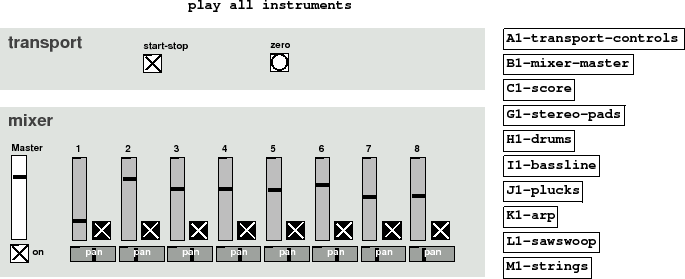

Subsections
Figure 45 summary
Here is the final arrangement of the composition "Moon over Pokesdown
station". It took several hours but was completed in one session. Once you
have a library of useful abstractions you are familiar with the time
from idea to finish is really reduced.
What is this music? Ignoring style and genre it's a good formula for "bed" music, so called not because
it makes you want to sleep :), but because it is used in games and radio
as an ever changing or evolving background piece, often to talk over. Although the
music sounds coherent and thematic it is never exactly the same from one bar to
the next so you can render out or synthesise indeterminate lengths of it
that never loop. That is useful when you have features that are unknown in length
beforehand, such as in a game where unpredictable player actions set
the music changes. Algorithmic compositions can use rules to create
hours of music, permuting variations on a theme or generating
patterns from new rules. This example uses only arithmetic, selects and
random sources and doesn't even change its main chord pattern, but it shows
the how a piece of music can be built from only simple Pd code.
What is procedural media? Puredata
is an application to play the file included here. Unlike
a wav or mp3 file of music it is not yet determined what it will sound like when you
play it. Seeding random numbers will ensure that no two people ever hear
exactly the same mix. Procedural video is already quite common, in games
and screensavers, but procedural audio less so. This composition has no
score dynamics at all, in fact it doesn't even have a beginning, middle and end,
it just plays the sequences forever. Interaction is the mixer GUI we built.
In Composition 3 we will look at some nicer ways of passing data using route and lists and how to build up a big picture
of a score with different movements, tempos, mix parameters and grooves, and then
how to influence the score in real time with controllers.
Figure 45:
N1-Composition002
|

|
N1-Composition002-play.pd
N1-Composition002-play.ogg
Andy Farnell
http://obiwannabe.co.uk/